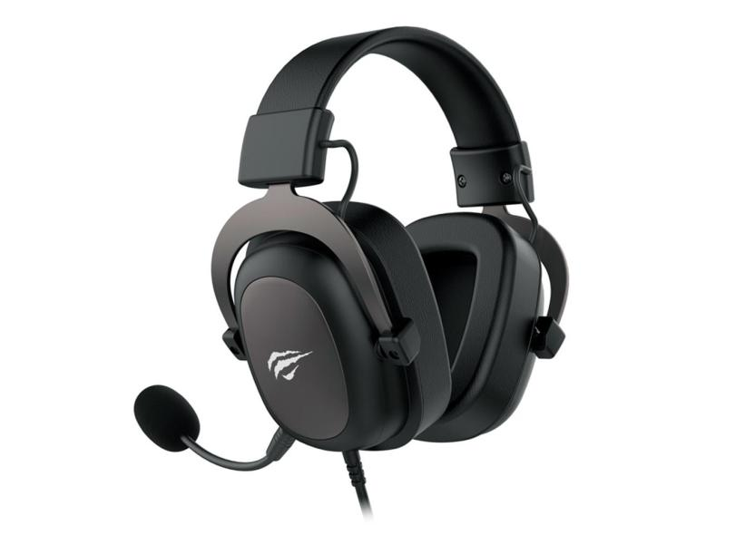

Periféricos
-
Dominando o Cenário: Viper mini
pro player de destaque, escolhe o Viper Mini para brilhar nos esports. Com personalização meticulosa, ele domina torneios com movimentos precisos e reflexos rápidos. Além das vitórias, Lucas Veteka compartilha seu conhecimento, elevando a comunidade gaming. O Viper Mini torna-se a ferramenta essencial na busca incansável de Lucas Veteka pela excelência nos games.

-
Dominando o Cenário: Alloy origins
pro player de renome, destaca-se nos esports com o teclado Alooy Origins. Personalizando cada tecla para a perfeição, ele domina torneios com uma precisão exímia e respostas rápidas. Para além das conquistas, Lucas Veteka compartilha seu conhecimento, enriquecendo a comunidade gaming. O Alooy Origins torna-se a peça fundamental na busca incessante de Lucas Veteka pela excelência nos games.

-
Dominando o Cenário: Havit h200hd
pro player de destaque, imerge nos esports com o fone Havit H200HD. Personalizando cada ajuste para uma imersão total, ele se destaca em torneios com precisão sonora e resposta instantânea. Além das vitórias, Lucas Veteka compartilha seu conhecimento, enriquecendo a comunidade gaming. O Havit H200HD torna-se o parceiro essencial na busca incessante de Lucas Veteka pela excelência sonora nos games.
